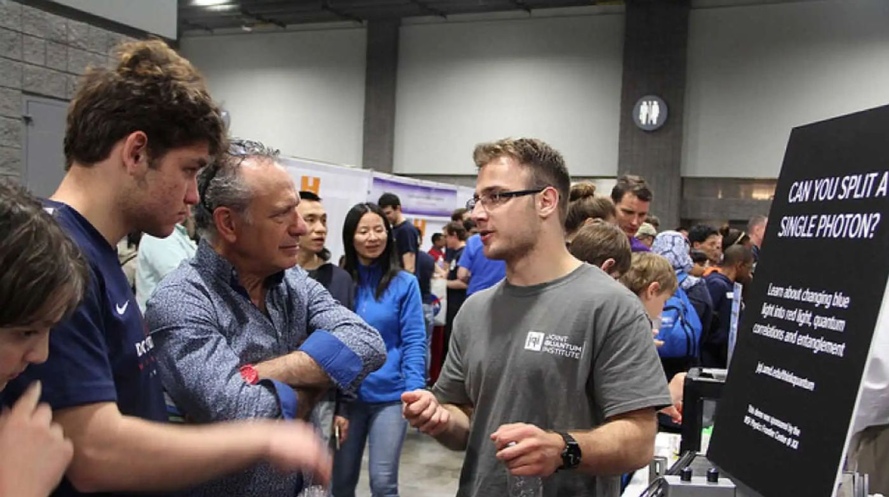
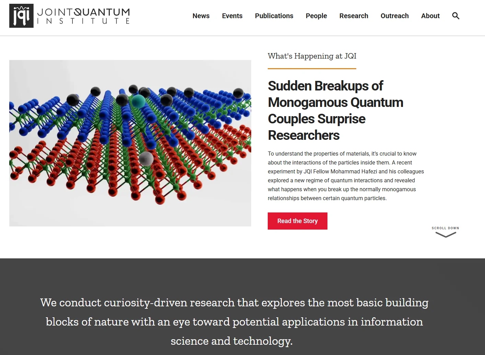
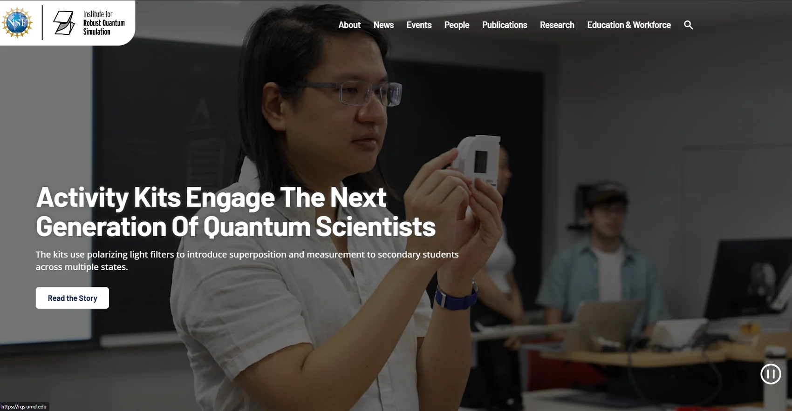
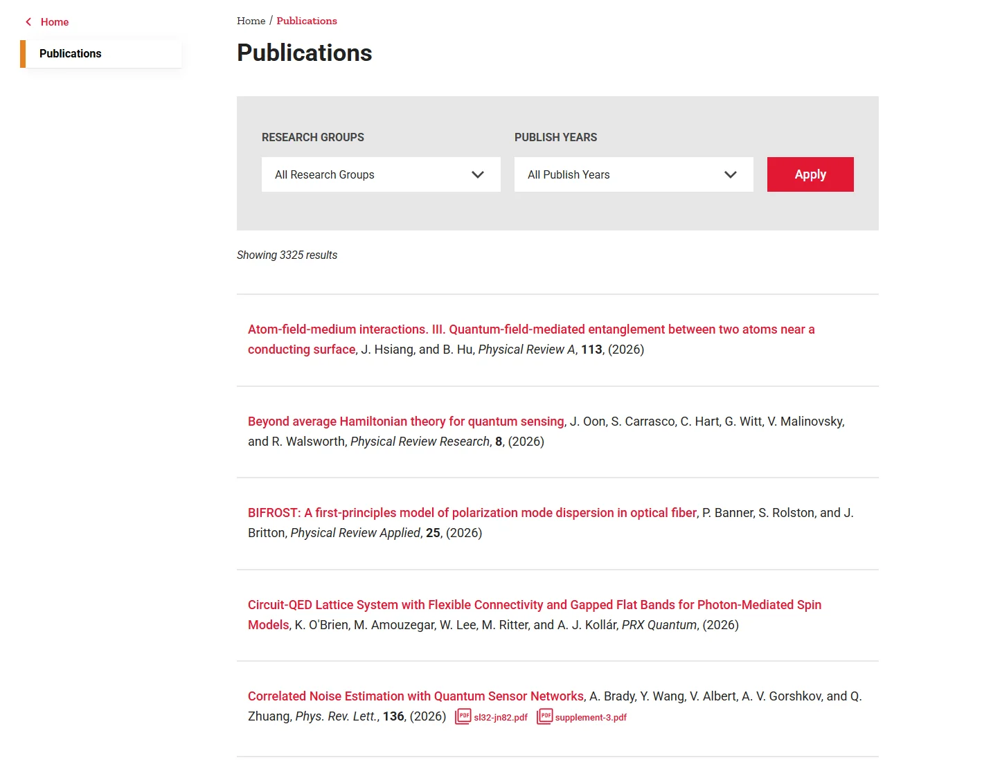
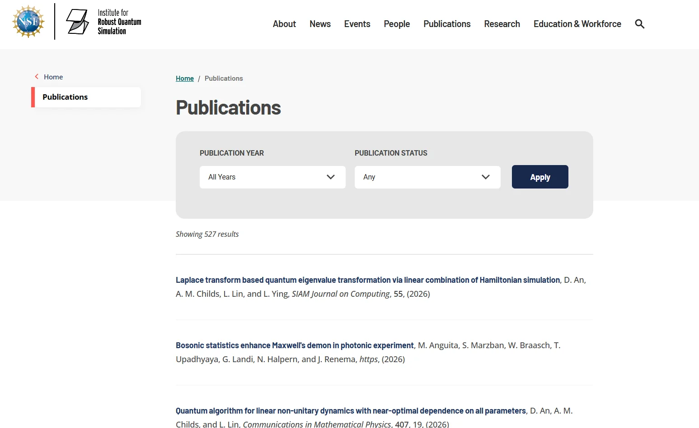
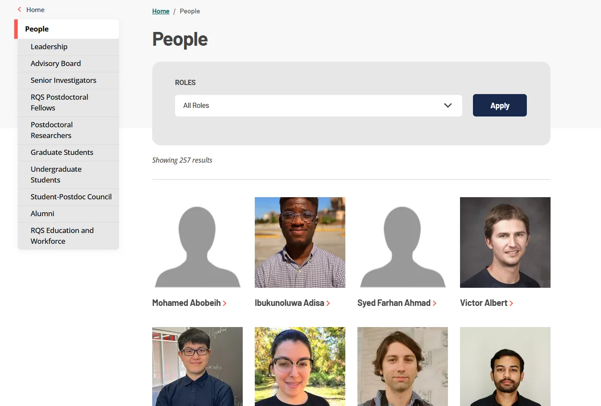
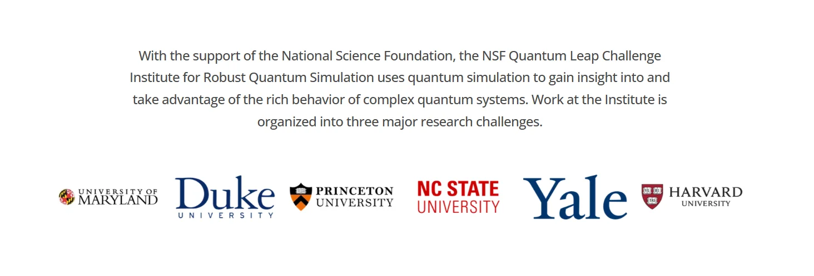
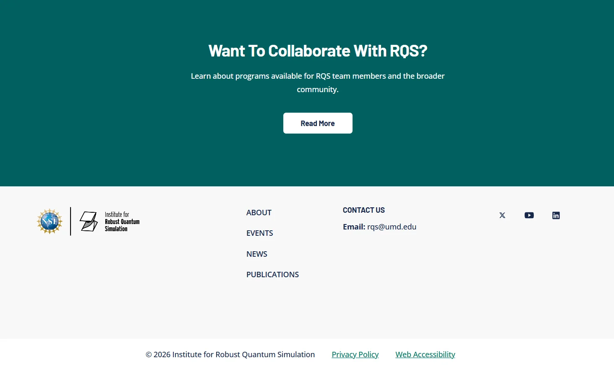

Two sister quantum institutes, two distinct identities, one component library.

The Joint Quantum Institute is a University of Maryland partnership with NIST. The Institute for Robust Quantum Simulation is an NSF Quantum Leap Challenge Institute working with Maryland, Duke, Princeton, NC State, Yale, and Harvard. Sister institutes, different missions, one web budget.
JQI's navigation ran eleven flat items with internal acronyms exposed. RQS had five. Neither site served a student trying to understand the field, neither gave the scholarship a home, and the budget covered one component library, not two designs.
How might we help each institute feel distinctly itself while making its research easy to explore?
Every move below is an answer to that question.
Both sites are built from the same components: the same filter bar, the same results list, the same directory grid, the same page shell. The identity comes from arrangement and palette, not from separate systems. JQI opens on its own research, light and red. RQS opens full-bleed on a student holding a polarizing filter, dark and teal. Same blocks, two institutes that look nothing alike.


I rebuilt both architectures around what a visitor is looking for rather than how each institute is organized internally. JQI's eleven flat items, acronyms and all, became six sections with real depth. RQS grew from five items into a full structure with room for its three research challenges, its people, and its education work.
Publications are the institutes' main output and had nowhere to live. I gave both a filterable index: JQI's by research group and year, RQS's by year and status. Thousands of papers became something a researcher or a prospective student can actually search.


The directory now holds everyone from leadership and senior investigators to postdocs, graduate students, and alumni, filterable by role. And RQS's partner institutions, from Maryland and Duke to Princeton, Yale, and Harvard, were given a place on the page instead of a line of body copy.


The redesign gave two institutes distinct front doors from one component library, on one budget and one timeline. Both architectures are built around what a visitor wants rather than how the institute is organized, the scholarship is searchable, and the people and partners are visible.

I led discovery research, information architecture, UX design, and UX copy on both institutes. Creative direction, graphic design, and front-end development came from the idfive team.